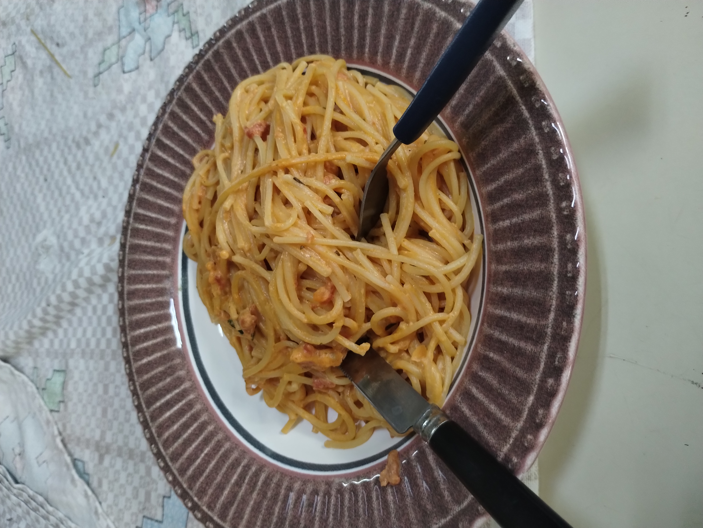

Pasta

Creamy Tomato Pasta
This creamy tomato pasta is easy to make and one of my favorite dishes I made myself.
Ingredients
- 200g pasta
- 2 tablespoons butter
- Salt to taste
- 1 teaspoon garlic powder
- 2 tablespoons tomato paste
- 1 cup heavy cream
- Fresh basil, chopped
Steps
Heat up water in a pot.
Once the water is boiling, place the pasta in the water and add salt.
In the meantime, make the sauce. Place all the ingredients used on the table, open.
Heat a pan, add garlic, tomato paste, and heavy cream.
Add salt and basil.
Finish the sauce by adding butter and tasting to adjust the salt to your preference.
Once the pasta is cooked, remove the pasta from the water and drain it.
Place the pasta in the pan with the sauce, add more butter and mix the pasta with the sauce.
Serve on a plate. Enjoy!
return to main page